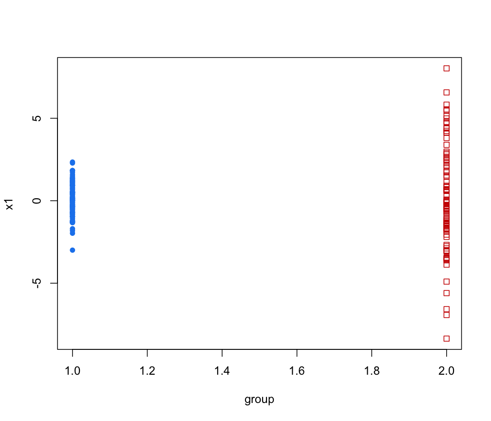

Simulate from a Parameterized MVN Mixture Model
simE.RdSimulate data from a parameterized MVN mixture model.
Usage
simE(parameters, n, seed = NULL, ...)
simV(parameters, n, seed = NULL, ...)
simEII(parameters, n, seed = NULL, ...)
simVII(parameters, n, seed = NULL, ...)
simEEI(parameters, n, seed = NULL, ...)
simVEI(parameters, n, seed = NULL, ...)
simEVI(parameters, n, seed = NULL, ...)
simVVI(parameters, n, seed = NULL, ...)
simEEE(parameters, n, seed = NULL, ...)
simVEE(parameters, n, seed = NULL, ...)
simEVE(parameters, n, seed = NULL, ...)
simVVE(parameters, n, seed = NULL, ...)
simEEV(parameters, n, seed = NULL, ...)
simVEV(parameters, n, seed = NULL, ...)
simEVV(parameters, n, seed = NULL, ...)
simVVV(parameters, n, seed = NULL, ...)Arguments
- parameters
A list with the following components:
proA vector whose kth component is the mixing proportion for the kth component of the mixture model. If missing, equal proportions are assumed.
meanThe mean for each component. If there is more than one component, this is a matrix whose kth column is the mean of the kth component of the mixture model.
varianceA list of variance parameters for the model. The components of this list depend on the model specification. See the help file for
mclustVariancefor details.
- n
An integer specifying the number of data points to be simulated.
- seed
An optional integer argument to
set.seed()for reproducible random class assignment. By default the current seed will be used. Reproducibility can also be achieved by callingset.seedbefore callingsim.- ...
Catches unused arguments in indirect or list calls via
do.call.
Value
A matrix in which first column is the classification and the remaining
columns are the n observations simulated from the specified MVN
mixture model.
- Attributes:
"modelName"A character string indicating the variance model used for the simulation.
Details
This function can be used with an indirect or list call using
do.call, allowing the output of e.g. mstep, em
me, Mclust, to be passed directly without the need
to specify individual parameters as arguments.
Examples
# \donttest{
d <- 2
G <- 2
scale <- 1
shape <- c(1, 9)
O1 <- diag(2)
O2 <- diag(2)[,c(2,1)]
O <- array(cbind(O1,O2), c(2, 2, 2))
O
#> , , 1
#>
#> [,1] [,2]
#> [1,] 1 0
#> [2,] 0 1
#>
#> , , 2
#>
#> [,1] [,2]
#> [1,] 0 1
#> [2,] 1 0
#>
variance <- list(d= d, G = G, scale = scale, shape = shape, orientation = O)
mu <- matrix(0, d, G) ## center at the origin
simdat <- simEEV( n = 200,
parameters = list(pro=c(1,1),mean=mu,variance=variance),
seed = NULL)
cl <- simdat[,1]
sigma <- array(apply(O, 3, function(x,y) crossprod(x*y),
y = sqrt(scale*shape)), c(2,2,2))
paramList <- list(mu = mu, sigma = sigma)
coordProj( simdat, paramList = paramList, classification = cl)
#> Warning: "paramList" is not a graphical parameter
#> Warning: "paramList" is not a graphical parameter
#> Warning: "paramList" is not a graphical parameter
#> Warning: "paramList" is not a graphical parameter
#> Warning: "paramList" is not a graphical parameter
#> Warning: "paramList" is not a graphical parameter

# }